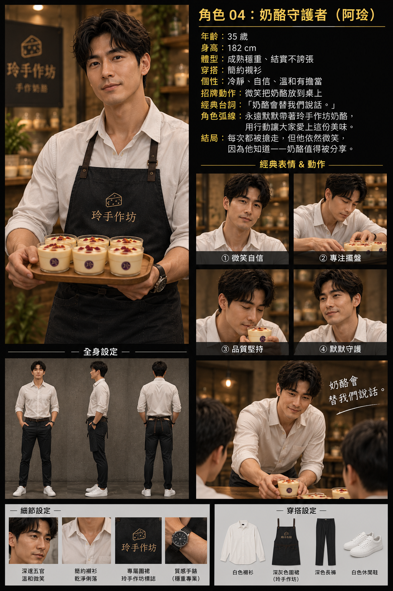

BEFORE
IDEA｜男人不吃奶酪
從一句反差台詞建立故事鉤子。
從「男人不吃奶酪」這個反差梗出發，建立四位角色、露營場景、分鏡與產品爆點，形成可執行的 AI 短影音流程。
把一個簡單笑點拆成可拍、可生成、可剪輯的影像語言。S07 將第一口、蜂蜜慢流、花瓣飄落、湯匙切面與第二口表情組成高速剪接爆點。
從一句反差台詞建立故事鉤子。

建立角色辨識、服裝、場景與產品一致性。
把笑點、產品鏡頭與結尾彩蛋整理成可執行分鏡。
此處已預留 YouTube / Vimeo / MP4 影片嵌入框架。
不放不存在的外部連結；保留乾淨的專業展示區，方便之後嵌入你的成片。
建立四位主要角色與視覺辨識
S02–S08 連續故事段落
第一口、蜂蜜、花瓣、切面、表情